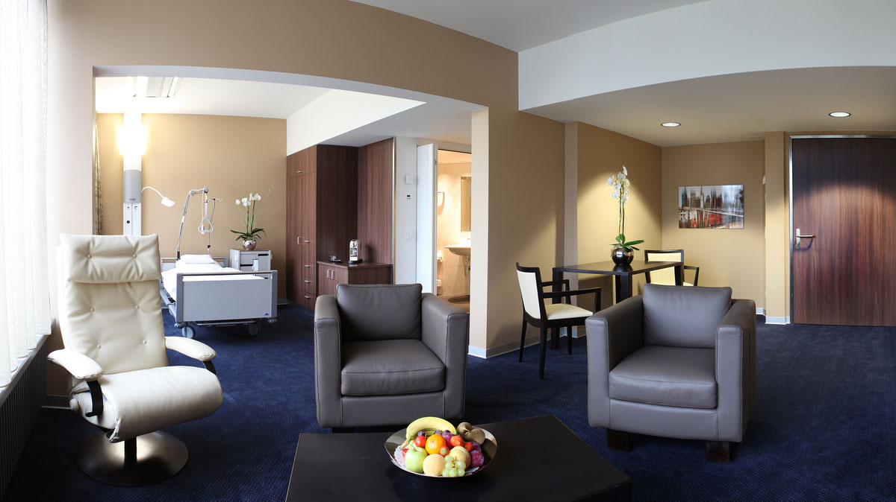
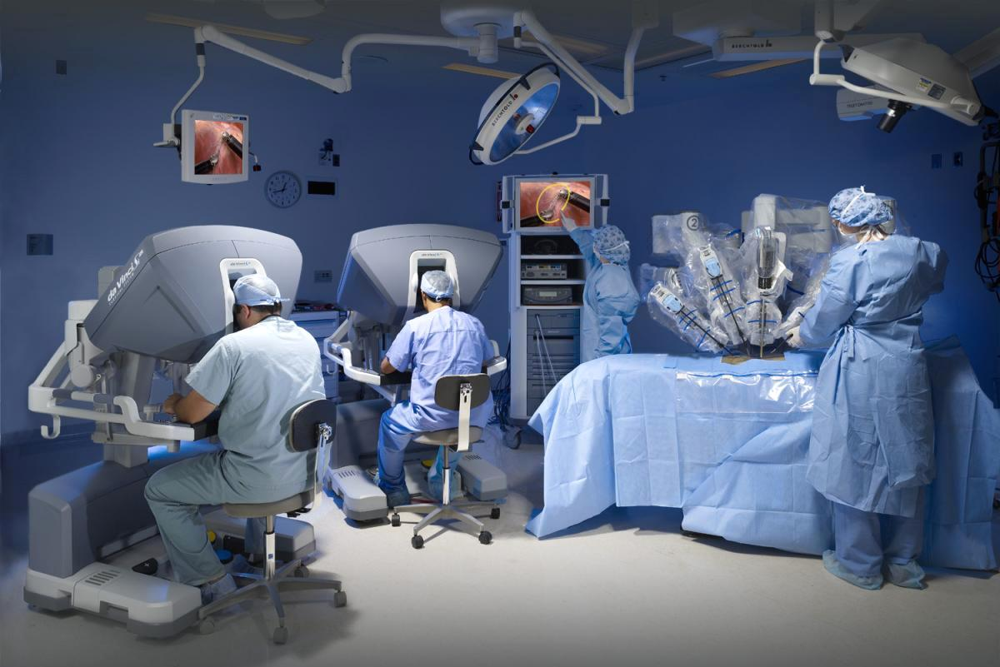

Превентивный чекап
программа за 1–3 дня
Главный партнёр · Цюрих · с 2011 года
Флагман частной медицины Швейцарии и наш ключевой партнёр по лечению и чекапам — участник Mayo Clinic Care Network.

О клинике
Privatklinik Bethanien — одна из ведущих частных клиник Швейцарии, основанная в 1912 году и расположенная в престижном районе Цюриха с видом на озеро и Альпы. С 2010 года клиника входит в сеть Swiss Medical Network и является участником Mayo Clinic Care Network — это значит прямой доступ к опыту и протоколам клиники Mayo.
Здесь врачи с мировым именем, передовые технологии (включая роботизированную хирургию Da Vinci) и полный цикл — от диагностики и чекапа до лечения и восстановления — сочетаются с сервисом уровня пятизвёздочного отеля.
Клиника привыкла к пациентам, для которых приватность критична: закрытые зоны, отдельные палаты-люкс и полная конфиденциальность на каждом этапе. Здесь умеют создавать условия для самых требовательных международных пациентов.
Цифры и факты
105
палат, включая люкс-сюиты
28
медицинских направлений
340+
аккредитованных врачей
3 850
операций в год · 3 операционных
Видео




Медицинские направления
программа за 1–3 дня
диагностика и лечение сердца
диагностика и комплексное лечение
роботизированная Da Vinci
эндоскопия и профилактика
сосудистая диагностика
Через CorSwiss
Подбираем профессора под ваш случай и согласуем программу и сроки напрямую.
Согласуем смету, координируем оплату с клиникой — прозрачно и без скрытых платежей.
Медицинская виза, личный водитель и VIP-сопровождение на месте.
На вашем языке — в клинике и за её пределами, для любых вопросов.
Пятизвёздочные отели, велнес, спа и восстановительные поездки.
Экскурсии, рестораны, шопинг, спа и космеология, поездки по Швейцарии и Европе.
Консультация
Оставьте заявку — медицинский менеджер CorSwiss свяжется с вами, подберёт профессора и рассчитает программу лечения.